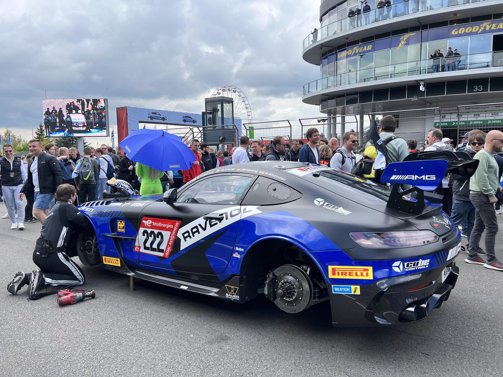

The reports
Racing rewards preparation and punishes wishful thinking. Both documents exist to keep the program honest.
Every CorsaLogic weekend is bracketed by two written documents. The pre-race report arrives before the truck leaves the shop, so the whole team walks in with the same plan. The post-race report lands within days of the checkered flag, while the details are still fresh and before the next entry closes. They are short, specific, and written to be acted on, not filed.
Pre-race
Delivered before load-in
- Event brief
- Schedule, sporting regulations that matter for this entry, and the items that caught teams out here last time.
- Track notes
- Corner-by-corner references, curb use, and where the lap time actually lives.
- Setup baseline
- The starting setup with the reasoning behind it, plus the first two changes if the balance goes either direction.
- Tire & fuel plan
- Target pressures, expected degradation, fuel numbers per stint, and the pit windows they create.
- Weather & risk
- The forecast, the wet plan, and the decisions we have agreed to make before we have to make them.
Post-race
Delivered within days of the flag
- Session review
- What we planned, what we did, and where the two diverged, session by session.
- Data debrief
- Where the lap time came from and where it went, with the traces to back it up.
- Strategy review
- The calls we made from the stand, what the alternatives were, and whether we would make them again.
- Reliability & actions
- Everything the car needs before it runs again, owned and dated.
- Carryover
- The setup and lessons that transfer to the next event, written into the next pre-race brief.
